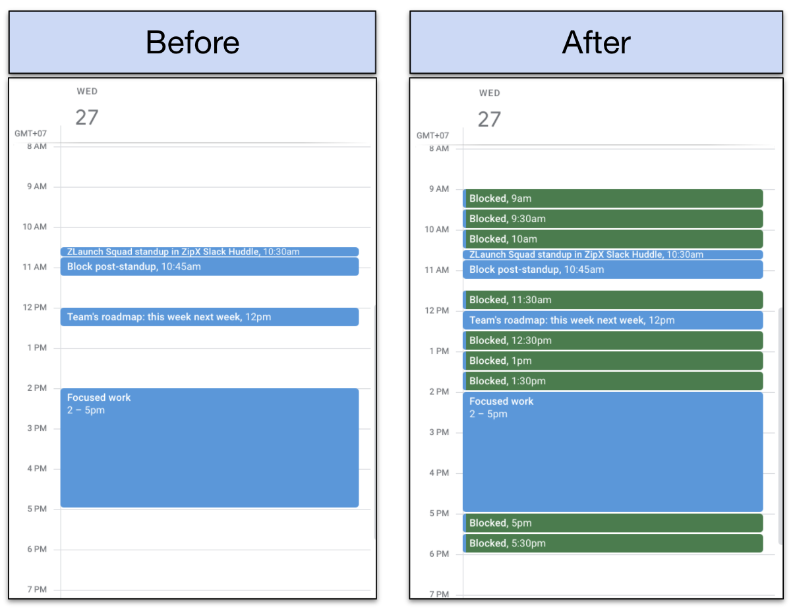

How I Keep My Planning on Track
I wonder how organising meetings worked before online calendars were invented.
I feel meetings must have been organised with mutual consent.
Today the mutual consent part got lost.
An open slot means you’re free.
When someone invites you on that open slot, you are expected to accept the invite.
Despite it shattering your day into pieces.
To prevent that, you could block your calendar upfront.
Many people are reluctant to do that. I was as well.
It made me feel as not cooperative.
Last year I put a 3 hour focus-time block in my afternoon.
I expected a backlash. It never came. And now it's a feature on Google Calendar.
The next step was dreadful same day meetings.
I am a planner.
At the end of every day I make my planning for the next day.
I want to execute this planning.
I wrote a script to make sure my current day is fully blocked.
It runs every evening at 10pm and blocks my next day.
Now when people urgently need me, they reach out, and we assess whether the problem justifies the urgency.
One step closer to my holy grail: finishing my planning every day!